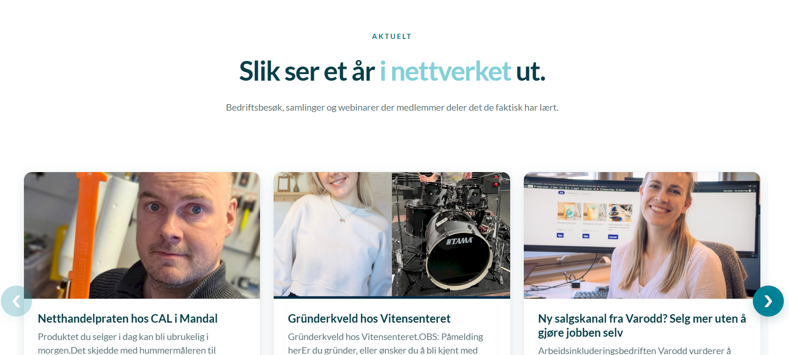

Status 2:
Denne status siden dekker informasjon om gruppens sammarbeid med E-waves frem til uke 42. Gruppen vil presentere hvordan gruppen ligger ann på oppgavene deres.
Statusoppdatering på oppgaven:
Hjemmenettsiden
Hjemmenettsiden er 90% fullført, her gjenstår det å finpusse nettsiden, og legge til riktige
bilder til hver modul. Relanseringen av nettsiden er forventet å skje onsdag den 14. Fra status 1
har gruppen endelig funnet en måte å vise frem tidligere arrangementer, og har lagt denne til. Modulen
har fått en endring, istedet for å bare vise de tre siste arrangementene, kan man se de siste 15. I tillegg
vil modulen oppdateres automatisk dersom et arrangement oppdaterer status fra kommende, til ferdig.
Wavey
Wavey er, som skrevet, chatbotten som gruppen vil arbeide med. Et av kravene var at chatbotten skal transkribere
videoer som gir nyttig informasjon for bedriftene. Gruppen har laget

Spesielle utfordringer og spennende funn
Gjennom de siste ukene har gruppen møtt på spennende utfordringer som de må bearbeide.
Primært har gruppen måtte lært seg WordPress, for å forstå hvordan nettsiden blir bygget opp.
I tilegg, måtte gruppen undersøke hvordan tidligere versjoner av nettsiden har blitt satt sammen
slik at den nye versjonen kan passe sømløst med resten av sidene.
Gruppen fant ut at i Elementor, som er editoren brukt til oppbyggingen aksepterer en blanding av
widget basert editor, med mulighet for HTML, CSS og Javascript. Dette åpnet opp mange muligheter
hvor gruppen kunne lage beholdere visuelt på skjerm, samtidig som de kan pynte nettsiden ved bruk av
CSS.
Til nå er den største utfordringen å kunne sende arrangementer over til nettsiden, slik at den
automatisk oppdaterer aktuelt seksjonen med de siste arrangementene.